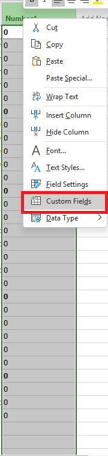
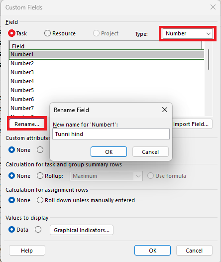
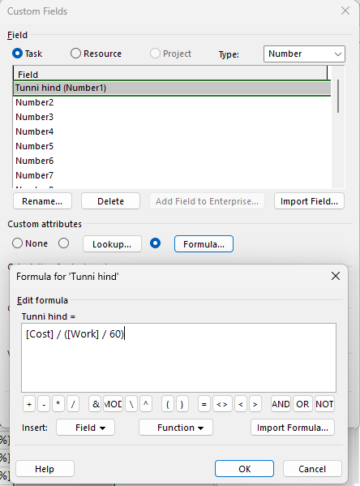
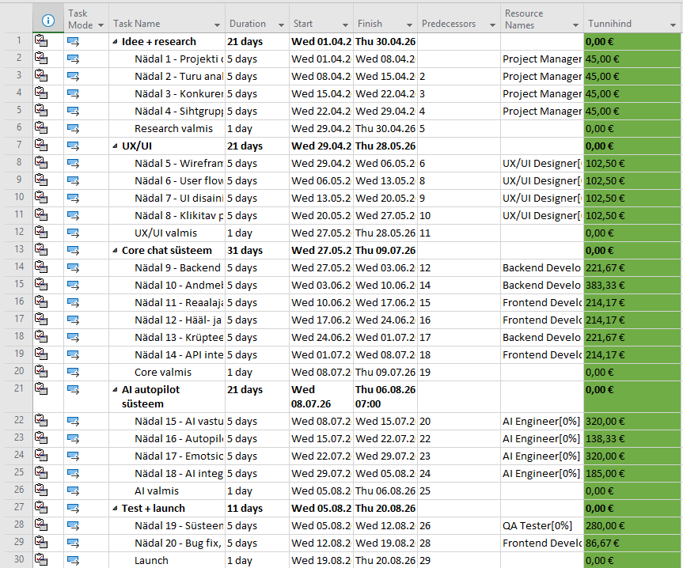

Mis on arvutusväli?
Custom
Fields
& valemid
Miks kasutada?
Arvutusväljad (Custom Fields) võimaldavad lisada MS Projecti tabelitesse uusi veerge, mille väärtused arvutatakse automaatselt valemi alusel.
Näiteks saab automaatselt arvutada eelarve ületamise protsendi, ülesande staatuse värvi indikaatori või ressursi koormuse taseme — kõik see ilma käsitsi sisestamata.
Samm-sammuline juhend
Ava kohandatud väljade aken
Klõpsa ülaosas vahekaardil Project, seejärel vali Custom Fields. Avaneb aken, kus saad hallata kõiki kohandatud välju.
Vali välja tüüp
Ülaosas vali, kas väli kuulub Task (ülesanne), Resource (ressurss) või Project tasemele. Seejärel vali välja andmetüüp: Number, Text, Cost, Date või Flag.
Nimeta väli ümber
Klõpsa nupul Rename ja anna väljale arusaadav nimi, näiteks "Eelarve kasutus %" või "Staatus". See nimi ilmub hiljem veeru päisesse.
Lisa valem
Klõpsa Formula nupul. Avaneb valemi redaktor, kus saad kirjutada arvutusvalemi. Kasuta MS Projecti sisseehitatud välju, funktsioone ja tehtemärke.
Näide: [Actual Cost] / [Baseline Cost] * 100 — arvutab tegeliku maksumuse protsendi planeeritust.
Seadista graafilised indikaatorid (valikuline)
Vajuta Graphical Indicators, et kuvada välja väärtuste asemel värvilisi ikoone. Näiteks: roheline = OK, kollane = hoiatus, punane = probleem. See teeb projekti oleku ülevaate palju kiiremaks.
Lisa väli Gantt-diagrammi tabelisse
Paremklõpsa veeru päisel Gantt-vaates, vali Insert Column ja otsi oma kohandatud välja nimi. Nüüd on arvutustulemused nähtavad igas ülesande reas.
Valemite näited
Kasulikud valemid MS Projectis
Eelarve ületamine (%)
Näitab, mitu protsenti planeeritud eelarvest on kulutatud.
Hilinemise päevad
Arvutab, mitu päeva erineb tegelik lõppkuupäev planeeritust.
Staatuse tekst
Kuvab teksti vastavalt ülesande valmisoleku protsendile.
Jääk eelarvest
Näitab, kui palju eelarvet on veel kasutada jäänud.
Ekraanipildid




Miks arvutusväljad on kasulikud?
Arvutusväljad säästävad aega ja vähendavad vigade riski. Selle asemel, et käsitsi arvutada iga ülesande staatust või eelarve täitmist, teeb MS Project seda automaatselt iga kord, kui andmed muutuvad.
Koos graafiliste indikaatoritega saab projektijuht ühe pilguga näha, millised ülesanded on probleemis — punane ikoon tähendab kohe, et midagi vajab tähelepanu.
Videoõpetus
Arvutusvälja lisamine — videoõpetus
Vaata YouTube'i videoõpetust, kus näidatakse samm-sammult, kuidas lisada arvutusvälju ja valemeid Microsoft Projectis.
▶ Vaata videot